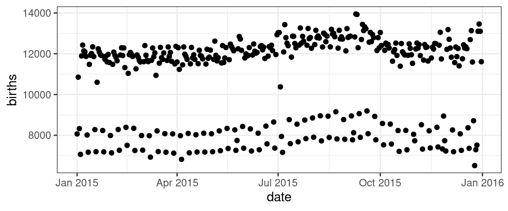

US Births in 2015
Here is some data giving the number of live births in the United States each day of 2015.
Your Turn
- Pick out a particular day (perhaps your birthday) and find out if the number of births that day is high, low, or about average.
- How can you determine what consitutes high, low, or about average?
- Propose other questions that (a) are interesting, and (b) might be answerable with this data set.
The point of statistics
The purpose of statistics is to help you …
- Extract useful or interesting information from data. This also helps to …
- Understand the claims that other people are making about patterns in data:
- Do the claims really reflect the data?
- Is there enough data to justify the claim?
- Are there reasonable alternative explanations for the observed patterns?
- Plan how to acquire new data that will help resolve uncertainty, disputes, or ambiguities.
Our course in statistics will …
- Teach you a variety of methods for turning data into a form that people can make sense of.
- Know which methods are most helpful for which purposes.
- Identify when a method is not working out … so you can try a different method.
- Help you learn the common objects and concepts that make up statistics.
- Graphics to display patterns in data.
- Numerical descriptions summarizing patterns in data.
- Tests for whether a pattern is uncertain or might just be due to happenstance.
Graphics can show patterns

What patterns do you notice in this plot?
What possible explanations could there be for these patterns?
How do we make this plot?

We are going to use this plot
to learn how to create plots using the
ggformulapackageto begin thinking about designing, describing, and interpreting plots more generally
Two important questions
To get R (or any software) to create this plot (or do anything else, really), there are two important questions you must be able to answer.
Before continuing, think about what those two questions might be.
The Questions
To get R (or any software) to create a plot, there are two important questions you must be able to answer:
1. What do you want the computer to do?
Part of learning statistics is learning the various “kinds of what” are appropriate in one setting or another. Learning these objects and their names simplifies answering Question 1. Examples: scatterplot, groupwise means, box-and-whisker plot, regression, etc.
2. What must the computer know in order to do that?
Answering this question also involves knowing the “kinds of what” that the computer can be given to work on. Almost all of the operations in introductory statistics involve two distinct types of “what”:
- the dataset: a rectangular, spreadsheet-like array of rows and columns. Ours is called
Births2015. It has 365 rows and 4 columns. - the variables: the columns of the data set.
Births2015has 4 variables nameddate,births,day_of_year, andwday.
Answers to the questions
To make this plot, the answers to our questions are
1. What do you want the computer to do?
- Ans. Make a scatter plot (i.e., a plot consisting of points)
2. What must the computer know in order to do that?
Ans. part 1. The data set to be used in the plot.
Ans. part 2 Roles for the variables, e.g.
- The variable to be plotted along the \(y\) axis.
- The variable to be plotted along the \(x\) axis.
We just need to learn how to tell R these answers.
Plotting with Formulas
The Formula Template
We will provide answers to our two questions by filling in the boxes of this important template:
goal ( yyy ~ xxx , data = mydata )
We just need to identify which portions of our answers go into which boxes.
The Name of the Game
It is useful to provide names for the boxes:
goal ( y ~ x , data = mydata , …)
These names can help us remember which things go where. (The ... indicates that there are some additional arguments we will add eventually.)
2 Questions and the Formula Template
goal ( y ~ x , data = mydata )
Q: What do you want R to do? A: goal
This determines the function to use.
For a plot, the function will describe what sorts of marks to draw (points, in our example).
- other possibilities include lines, boxplots, etc, etc.
Q: What must R know to do that? A: arguments
- This determines the inputs to the function.
- For a plot, we must identify the variables and the data frame that contains them.
Assembling the pieces
Template
goal ( y ~ x , data = mydata )
Pieces
| box | fill in with | purpose |
|---|---|---|
goal
|
gf_point
|
plot some points |
y
|
births
|
y-axis variable |
x
|
date
|
x-axis variable |
mydata
|
Births2015
|
name of data set |
Exercise
Put each piece in its place in the template below and then run the code to create the plot.
goal(y ~ x, data = mydata)If you get an “object not found” or “could not find function” error message, that indicates that you have not correctly filled in one of the four boxes from the template.
Note: R is case sensitive, so watch your capitalization.
For the record, here are the first few rows of Births2015.
Formulas
The most distinctive feature of ggformula plots is the use of formulas to describe the positional information of a plot. Formulas in R always involve the tilde character, which is easy to overlook. It looks like this:

The position of  on the keyboard varies from brand to brand. On Apple keyboards, it’s here.
on the keyboard varies from brand to brand. On Apple keyboards, it’s here.

Exercise
Find the on your keyboard.
Using formulas to describe plots
Most gf_ functions take a formula that describes the positional attributes of the plot. Using one of these functions with no arguments will show you the “shape” of the formula it requires.
Exercise
Run this code to see the formula shape for gf_point().
gf_point()You should see that gf_point()’s formula has the shape y ~ x, so the \(y\)-variable name goes before the tilde and the \(x\)-variable name goes after. (Think: “y depends on x”. Also note that the \(y\)-axis label appears farther left than the \(x\)-axis label.)
Exercise
Change date to day_of_year and see how the plot changes. (If you do this on a separate line, you will see both plots at once.)
gf_point(births ~ date, data = Births2015)Bonus Exercise (Optional)
Reverse the roles of the variables – changing births ~ date to date ~ births – to see how the plot changes.
Changing things up – different types of plots
Our plots have points because we have used gf_point(). But there are many other gf_ functions that create different types of plots.
Exercise
Experiment with some other plot types by changing gf_point() to one of the following:
gf_line(): connect the dotsgf_lm(): a regression line (lm = linear model)gf_smooth(): smoothed version ofgf_line()
Which type of plot reveals exceptional cases the best? What are those exceptional cases?
gf_point(births ~ date, data = Births2015)Setting and Mapping attributes
The births data in 2015 contains two clear “waves” of dots. One conjecture is that these are weekdays and weekends. We can test this conjecture by putting different days in different colors.
In the lingo of ggformula, we need to map color to the variable wday. Mapping and setting attributes are different in an important way.
color = "navy"sets the color to “navy”. All the dots will be navy.color = ~ wdaymaps color towday. This means that the color will depend on the values ofwday. A legend (aka, a guide) will be automatically included to show us which days are which.
Exercise
Change the color argument so that it maps to
wday. Don’t forget the tilde (~).Try some other plot types:
gf_line(),gf_smooth(), etc. Which do you like best? Why?
gf_point(births ~ date, data = Births2015, color = "navy")Across the decades
Data on births are available for other years as well. (This tutorial has data from 1969 - 1988 and for 2015).
Your Turn
Compare 1978 to 2015. In what ways are the yearly and daily patterns different?
Some suggestions:
- You can put more than one layer of graphics on the same plot by connecting the graphics commands with “pipes”:
%>% - Use
day_of_yearas the explanatory variable rather thandate. Withdate, the 1978 and 2015 data will be plotted almost 40 years apart! - Use color to distinguish the years.
Bonus questions
How else could you distinguish the years? (Describe the plot, even if you don’t know how to get the plot made.)
What would happen if we used
wdayas the explanatory variable rather thanday_of_year?- Which of
gf_point(),gf_line(),gf_smooth(), andgf_lm()do you like best for these plots? Why?